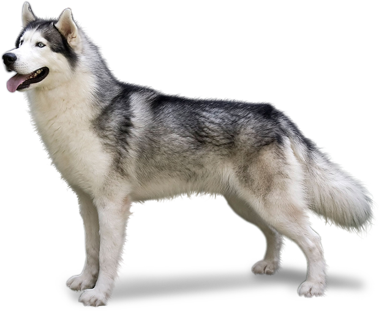

German Shepherd
Learn More
Learn More
Siberian Husky
Learn More
Learn More
 Golden Retiever
Golden RetieverLearn More
This is the list of all dog breeds available for adoption right now.
What's a Dog breed?
People have been breeding dogs since prehistoric times. The earliest dog
breeders used wolves to create domestic dogs. From the beginning, humans
purposefully bred dogs to perform various tasks. Hunting, guarding, and
herding are thought to be among the earliest jobs eagerly performed by the
animal destined to be called “man’s best friend.”
For thousands of years, humans bred dogs toward the physical and mental
traits best suited for the work expected of them. The sleek Greyhound
types bred to chase fleet-footed prey, and the huge mastiff types used as
guard dogs and warriors, are two ancient examples of dogs bred for
specific jobs.
As humans became more sophisticated, so did their dogs. Eventually, there
emerged specific breeds of dogs, custom-bred to suit the breeders’ local
needs and circumstances. The Greyhound, for instance, was the foundation
type for the immense Irish Wolfhound and the dainty Italian Greyhound. All
three have a distinct family resemblance, but you’d never mistake one for
another.
So, then, when is a breed a breed and not just a kind or type of dog? The
simplest way to define a breed is to say it always “breeds true.” That is,
breeding a purebred Irish Setter to another purebred Irish Setter will
always produce dogs instantly recognizable as Irish Setters.
Each breed’s ideal physical traits, movement, and temperament are set down
in a written document called a “breed standard.” For example, the breed
standard sets forth the traits that make a Cocker Spaniel a Cocker Spaniel
and not a Springer Spaniel.